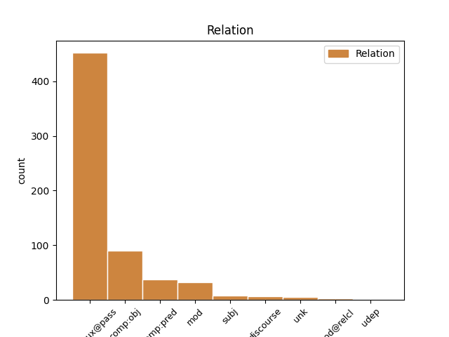
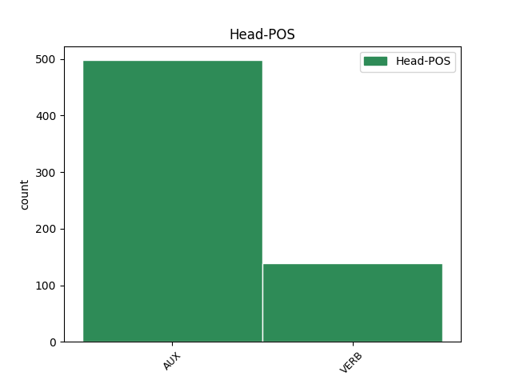
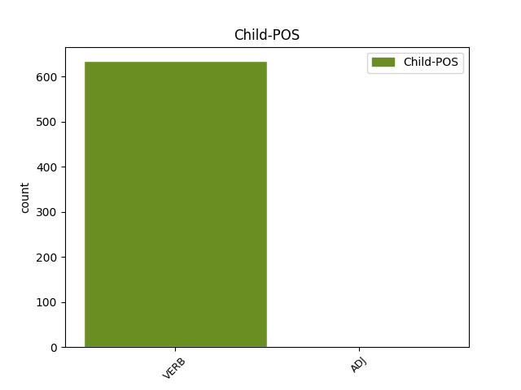

Distribution of features within this leaf



Agreement Rules sorted by frequency.
- When the dependent token is the complement for auxiliary(comp:aux@pass) of the head token, and the dependent token is VERB.
1 In _ _ _ _ 0 _ _ _
2 the _ _ _ _ 0 _ _ _
3 past _ _ _ _ 0 _ _ _
4 Muggle _ _ _ _ 0 _ _ _
5 Quidditch _ _ _ _ 0 _ _ _
6 has _ _ _ _ 0 _ _ _
7 mainly _ _ _ _ 0 _ _ _
8 been be AUX VBN Tense=Past|VerbForm=Part 0 _ _ _
9 played play VERB VBN Tense=Past|VerbForm=Part 8 comp:aux@pass _ _
10 at _ _ _ _ 0 _ _ _
11 colleges _ _ _ _ 0 _ _ _
12 in _ _ _ _ 0 _ _ _
13 the _ _ _ _ 0 _ _ _
14 US _ _ _ _ 0 _ _ _
15 , _ _ _ _ 0 _ _ _
16 but _ _ _ _ 0 _ _ _
17 over _ _ _ _ 0 _ _ _
18 the _ _ _ _ 0 _ _ _
19 last _ _ _ _ 0 _ _ _
20 few _ _ _ _ 0 _ _ _
21 years _ _ _ _ 0 _ _ _
22 there _ _ _ _ 0 _ _ _
23 has _ _ _ _ 0 _ _ _
24 been _ _ _ _ 0 _ _ _
25 a _ _ _ _ 0 _ _ _
26 dramatic _ _ _ _ 0 _ _ _
27 rise _ _ _ _ 0 _ _ _
28 in _ _ _ _ 0 _ _ _
29 the _ _ _ _ 0 _ _ _
30 number _ _ _ _ 0 _ _ _
31 of _ _ _ _ 0 _ _ _
32 community _ _ _ _ 0 _ _ _
33 teams _ _ _ _ 0 _ _ _
34 . _ _ _ _ 0 _ _ _
1 Do _ _ _ _ 0 _ _ _
2 whatever _ _ _ _ 0 _ _ _
3 it _ _ _ _ 0 _ _ _
4 is be VERB VBZ Mood=Ind|Number=Sing|Person=3|Tense=Pres|VerbForm=Fin 0 _ _ _
5 you _ _ _ _ 0 _ _ _
6 ’ve have VERB VBP Mood=Ind|Tense=Pres|VerbForm=Fin 4 comp:obj _ _
7 been _ _ _ _ 0 _ _ _
8 daydreaming _ _ _ _ 0 _ _ _
9 about _ _ _ _ 0 _ _ _
10 so _ _ _ _ 0 _ _ _
11 that _ _ _ _ 0 _ _ _
12 the _ _ _ _ 0 _ _ _
13 temptation _ _ _ _ 0 _ _ _
14 is _ _ _ _ 0 _ _ _
15 removed _ _ _ _ 0 _ _ _
16 once _ _ _ _ 0 _ _ _
17 you _ _ _ _ 0 _ _ _
18 get _ _ _ _ 0 _ _ _
19 back _ _ _ _ 0 _ _ _
20 to _ _ _ _ 0 _ _ _
21 work _ _ _ _ 0 _ _ _
22 . _ _ _ _ 0 _ _ _
1 Another _ _ _ _ 0 _ _ _
2 variation _ _ _ _ 0 _ _ _
3 is be AUX VBZ Mood=Ind|Number=Sing|Person=3|Tense=Pres|VerbForm=Fin 0 _ _ _
4 where _ _ _ _ 0 _ _ _
5 the _ _ _ _ 0 _ _ _
6 referee _ _ _ _ 0 _ _ _
7 places place VERB VBZ Mood=Ind|Number=Sing|Person=3|Tense=Pres|VerbForm=Fin 3 comp:pred _ _
8 the _ _ _ _ 0 _ _ _
9 snitch _ _ _ _ 0 _ _ _
10 somewhere _ _ _ _ 0 _ _ _
11 in _ _ _ _ 0 _ _ _
12 the _ _ _ _ 0 _ _ _
13 field _ _ _ _ 0 _ _ _
14 ( _ _ _ _ 0 _ _ _
15 in _ _ _ _ 0 _ _ _
16 this _ _ _ _ 0 _ _ _
17 case _ _ _ _ 0 _ _ _
18 it _ _ _ _ 0 _ _ _
19 's _ _ _ _ 0 _ _ _
20 a _ _ _ _ 0 _ _ _
21 small _ _ _ _ 0 _ _ _
22 ball _ _ _ _ 0 _ _ _
23 ) _ _ _ _ 0 _ _ _
24 . _ _ _ _ 0 _ _ _
1 Captured capture VERB VBN Tense=Past|VerbForm=Part 10 mod _ _
2 by _ _ _ _ 0 _ _ _
3 the _ _ _ _ 0 _ _ _
4 Vikings _ _ _ _ 0 _ _ _
5 866 _ _ _ _ 0 _ _ _
6 , _ _ _ _ 0 _ _ _
7 the _ _ _ _ 0 _ _ _
8 city _ _ _ _ 0 _ _ _
9 quickly _ _ _ _ 0 _ _ _
10 took take VERB VBD Mood=Ind|Tense=Past|VerbForm=Fin 0 _ _ _
11 on _ _ _ _ 0 _ _ _
12 a _ _ _ _ 0 _ _ _
13 new _ _ _ _ 0 _ _ _
14 identity _ _ _ _ 0 _ _ _
15 as _ _ _ _ 0 _ _ _
16 Jorvik _ _ _ _ 0 _ _ _
17 ( _ _ _ _ 0 _ _ _
18 pronounced _ _ _ _ 0 _ _ _
19 " _ _ _ _ 0 _ _ _
20 Yor-vik _ _ _ _ 0 _ _ _
21 " _ _ _ _ 0 _ _ _
22 ) _ _ _ _ 0 _ _ _
23 and _ _ _ _ 0 _ _ _
24 experienced _ _ _ _ 0 _ _ _
25 a _ _ _ _ 0 _ _ _
26 major _ _ _ _ 0 _ _ _
27 urban _ _ _ _ 0 _ _ _
28 revival _ _ _ _ 0 _ _ _
29 as _ _ _ _ 0 _ _ _
30 a _ _ _ _ 0 _ _ _
31 centre _ _ _ _ 0 _ _ _
32 of _ _ _ _ 0 _ _ _
33 Viking _ _ _ _ 0 _ _ _
34 trade _ _ _ _ 0 _ _ _
35 and _ _ _ _ 0 _ _ _
36 settlement _ _ _ _ 0 _ _ _
37 in _ _ _ _ 0 _ _ _
38 northern _ _ _ _ 0 _ _ _
39 England _ _ _ _ 0 _ _ _
40 . _ _ _ _ 0 _ _ _
1 The _ _ _ _ 0 _ _ _
2 Straits _ _ _ _ 0 _ _ _
3 Times _ _ _ _ 0 _ _ _
4 noted _ _ _ _ 0 _ _ _
5 what _ _ _ _ 0 _ _ _
6 began begin VERB VBD Mood=Ind|Tense=Past|VerbForm=Fin 12 subj _ _
7 as _ _ _ _ 0 _ _ _
8 individual _ _ _ _ 0 _ _ _
9 messages _ _ _ _ 0 _ _ _
10 to _ _ _ _ 0 _ _ _
11 Mohamed _ _ _ _ 0 _ _ _
12 had have AUX VBD Mood=Ind|Tense=Past|VerbForm=Fin 0 _ _ _
13 grown _ _ _ _ 0 _ _ _
14 into _ _ _ _ 0 _ _ _
15 a _ _ _ _ 0 _ _ _
16 " _ _ _ _ 0 _ _ _
17 support _ _ _ _ 0 _ _ _
18 movement _ _ _ _ 0 _ _ _
19 " _ _ _ _ 0 _ _ _
20 . _ _ _ _ 0 _ _ _
1 Captured _ _ _ _ 0 _ _ _
2 by _ _ _ _ 0 _ _ _
3 the _ _ _ _ 0 _ _ _
4 Vikings _ _ _ _ 0 _ _ _
5 866 _ _ _ _ 0 _ _ _
6 , _ _ _ _ 0 _ _ _
7 the _ _ _ _ 0 _ _ _
8 city _ _ _ _ 0 _ _ _
9 quickly _ _ _ _ 0 _ _ _
10 took take VERB VBD Mood=Ind|Tense=Past|VerbForm=Fin 0 _ _ _
11 on _ _ _ _ 0 _ _ _
12 a _ _ _ _ 0 _ _ _
13 new _ _ _ _ 0 _ _ _
14 identity _ _ _ _ 0 _ _ _
15 as _ _ _ _ 0 _ _ _
16 Jorvik _ _ _ _ 0 _ _ _
17 ( _ _ _ _ 0 _ _ _
18 pronounced pronounce VERB VBN Tense=Past|VerbForm=Part 10 discourse _ _
19 " _ _ _ _ 0 _ _ _
20 Yor-vik _ _ _ _ 0 _ _ _
21 " _ _ _ _ 0 _ _ _
22 ) _ _ _ _ 0 _ _ _
23 and _ _ _ _ 0 _ _ _
24 experienced _ _ _ _ 0 _ _ _
25 a _ _ _ _ 0 _ _ _
26 major _ _ _ _ 0 _ _ _
27 urban _ _ _ _ 0 _ _ _
28 revival _ _ _ _ 0 _ _ _
29 as _ _ _ _ 0 _ _ _
30 a _ _ _ _ 0 _ _ _
31 centre _ _ _ _ 0 _ _ _
32 of _ _ _ _ 0 _ _ _
33 Viking _ _ _ _ 0 _ _ _
34 trade _ _ _ _ 0 _ _ _
35 and _ _ _ _ 0 _ _ _
36 settlement _ _ _ _ 0 _ _ _
37 in _ _ _ _ 0 _ _ _
38 northern _ _ _ _ 0 _ _ _
39 England _ _ _ _ 0 _ _ _
40 . _ _ _ _ 0 _ _ _
1 The _ _ _ _ 0 _ _ _
2 U.S. _ _ _ _ 0 _ _ _
3 Department _ _ _ _ 0 _ _ _
4 of _ _ _ _ 0 _ _ _
5 Agriculture _ _ _ _ 0 _ _ _
6 notes note VERB VBZ Mood=Ind|Number=Sing|Person=3|Tense=Pres|VerbForm=Fin 0 _ _ _
7 , _ _ _ _ 0 _ _ _
8 " _ _ _ _ 0 _ _ _
9 Ground-level _ _ _ _ 0 _ _ _
10 ozone _ _ _ _ 0 _ _ _
11 causes cause VERB VBZ Mood=Ind|Number=Sing|Person=3|Tense=Pres|VerbForm=Fin 6 unk _ _
12 more _ _ _ _ 0 _ _ _
13 damage _ _ _ _ 0 _ _ _
14 to _ _ _ _ 0 _ _ _
15 plants _ _ _ _ 0 _ _ _
16 than _ _ _ _ 0 _ _ _
17 all _ _ _ _ 0 _ _ _
18 other _ _ _ _ 0 _ _ _
19 air _ _ _ _ 0 _ _ _
20 pollutants _ _ _ _ 0 _ _ _
21 combined _ _ _ _ 0 _ _ _
22 " _ _ _ _ 0 _ _ _
23 , _ _ _ _ 0 _ _ _
24 highlighting _ _ _ _ 0 _ _ _
25 the _ _ _ _ 0 _ _ _
26 importance _ _ _ _ 0 _ _ _
27 of _ _ _ _ 0 _ _ _
28 air _ _ _ _ 0 _ _ _
29 quality _ _ _ _ 0 _ _ _
30 for _ _ _ _ 0 _ _ _
31 agriculture _ _ _ _ 0 _ _ _
32 . _ _ _ _ 0 _ _ _
1 The _ _ _ _ 0 _ _ _
2 Galileo _ _ _ _ 0 _ _ _
3 and _ _ _ _ 0 _ _ _
4 Ulysses _ _ _ _ 0 _ _ _
5 spacecraft _ _ _ _ 0 _ _ _
6 carried carry VERB VBD Mood=Ind|Tense=Past|VerbForm=Fin 0 _ _ _
7 dust _ _ _ _ 0 _ _ _
8 detectors _ _ _ _ 0 _ _ _
9 onboard _ _ _ _ 0 _ _ _
10 that _ _ _ _ 0 _ _ _
11 Eberhard _ _ _ _ 0 _ _ _
12 Gruen _ _ _ _ 0 _ _ _
13 and _ _ _ _ 0 _ _ _
14 his _ _ _ _ 0 _ _ _
15 colleagues _ _ _ _ 0 _ _ _
16 used use VERB VBD Mood=Ind|Tense=Past|VerbForm=Fin 6 mod@relcl _ _
17 to _ _ _ _ 0 _ _ _
18 first _ _ _ _ 0 _ _ _
19 detect _ _ _ _ 0 _ _ _
20 and _ _ _ _ 0 _ _ _
21 them _ _ _ _ 0 _ _ _
22 measure _ _ _ _ 0 _ _ _
23 the _ _ _ _ 0 _ _ _
24 flux _ _ _ _ 0 _ _ _
25 of _ _ _ _ 0 _ _ _
26 interstellar _ _ _ _ 0 _ _ _
27 dust _ _ _ _ 0 _ _ _
28 particles _ _ _ _ 0 _ _ _
29 streaming _ _ _ _ 0 _ _ _
30 into _ _ _ _ 0 _ _ _
31 the _ _ _ _ 0 _ _ _
32 solar _ _ _ _ 0 _ _ _
33 system _ _ _ _ 0 _ _ _
34 . _ _ _ _ 0 _ _ _
1 “ _ _ _ _ 0 _ _ _
2 Do _ _ _ _ 0 _ _ _
3 n’t _ _ _ _ 0 _ _ _
4 humor _ _ _ _ 0 _ _ _
5 them _ _ _ _ 0 _ _ _
6 , _ _ _ _ 0 _ _ _
7 dammit _ _ _ _ 0 _ _ _
8 , _ _ _ _ 0 _ _ _
9 ” _ _ _ _ 0 _ _ _
10 Jenna _ _ _ _ 0 _ _ _
11 said _ _ _ _ 0 _ _ _
12 , _ _ _ _ 0 _ _ _
13 and _ _ _ _ 0 _ _ _
14 stomped stomp VERB VBD Mood=Ind|Tense=Past|VerbForm=Fin 0 _ _ _
15 , _ _ _ _ 0 _ _ _
16 still _ _ _ _ 0 _ _ _
17 naked naked ADJ JJ Degree=Pos|Mood=Ind|Tense=Past|VerbForm=Fin 14 mod _ SpaceAfter=No
18 , _ _ _ _ 0 _ _ _
19 still _ _ _ _ 0 _ _ _
20 wet _ _ _ _ 0 _ _ _
21 , _ _ _ _ 0 _ _ _
22 toward _ _ _ _ 0 _ _ _
23 the _ _ _ _ 0 _ _ _
24 phone _ _ _ _ 0 _ _ _
25 in _ _ _ _ 0 _ _ _
26 the _ _ _ _ 0 _ _ _
27 kitchen _ _ _ _ 0 _ _ _
28 . _ _ _ _ 0 _ _ _
Disagree Examples:
1 The _ _ _ _ 0 _ _ _
2 direction _ _ _ _ 0 _ _ _
3 of _ _ _ _ 0 _ _ _
4 saccades _ _ _ _ 0 _ _ _
5 is be AUX VBZ Mood=Ind|Number=Sing|Person=3|Tense=Pres|VerbForm=Fin 0 _ _ _
6 determined determine VERB VBN Tense=Past|VerbForm=Part 5 comp:aux@pass _ _
7 by _ _ _ _ 0 _ _ _
8 an _ _ _ _ 0 _ _ _
9 interaction _ _ _ _ 0 _ _ _
10 between _ _ _ _ 0 _ _ _
11 the _ _ _ _ 0 _ _ _
12 goals _ _ _ _ 0 _ _ _
13 of _ _ _ _ 0 _ _ _
14 the _ _ _ _ 0 _ _ _
15 observer _ _ _ _ 0 _ _ _
16 and _ _ _ _ 0 _ _ _
17 the _ _ _ _ 0 _ _ _
18 physical _ _ _ _ 0 _ _ _
19 properties _ _ _ _ 0 _ _ _
20 of _ _ _ _ 0 _ _ _
21 the _ _ _ _ 0 _ _ _
22 different _ _ _ _ 0 _ _ _
23 elements _ _ _ _ 0 _ _ _
24 of _ _ _ _ 0 _ _ _
25 the _ _ _ _ 0 _ _ _
26 scene _ _ _ _ 0 _ _ _
27 ( _ _ _ _ 0 _ _ _
28 e.g. _ _ _ _ 0 _ _ _
29 colour _ _ _ _ 0 _ _ _
30 , _ _ _ _ 0 _ _ _
31 texture _ _ _ _ 0 _ _ _
32 , _ _ _ _ 0 _ _ _
33 brightness _ _ _ _ 0 _ _ _
34 etc _ _ _ _ 0 _ _ _
35 ) _ _ _ _ 0 _ _ _
36 . _ _ _ _ 0 _ _ _
1 In _ _ _ _ 0 _ _ _
2 this _ _ _ _ 0 _ _ _
3 study _ _ _ _ 0 _ _ _
4 we _ _ _ _ 0 _ _ _
5 used _ _ _ _ 0 _ _ _
6 eye-tracking _ _ _ _ 0 _ _ _
7 in _ _ _ _ 0 _ _ _
8 the _ _ _ _ 0 _ _ _
9 first _ _ _ _ 0 _ _ _
10 stage _ _ _ _ 0 _ _ _
11 of _ _ _ _ 0 _ _ _
12 exploring _ _ _ _ 0 _ _ _
13 audience _ _ _ _ 0 _ _ _
14 experience _ _ _ _ 0 _ _ _
15 of _ _ _ _ 0 _ _ _
16 the _ _ _ _ 0 _ _ _
17 extensive _ _ _ _ 0 _ _ _
18 Spanish _ _ _ _ 0 _ _ _
19 art _ _ _ _ 0 _ _ _
20 collections _ _ _ _ 0 _ _ _
21 of _ _ _ _ 0 _ _ _
22 County _ _ _ _ 0 _ _ _
23 Durham _ _ _ _ 0 _ _ _
24 , _ _ _ _ 0 _ _ _
25 of _ _ _ _ 0 _ _ _
26 which _ _ _ _ 0 _ _ _
27 the _ _ _ _ 0 _ _ _
28 13 _ _ _ _ 0 _ _ _
29 Zurbarán _ _ _ _ 0 _ _ _
30 artworks _ _ _ _ 0 _ _ _
31 ( _ _ _ _ 0 _ _ _
32 there _ _ _ _ 0 _ _ _
33 are _ _ _ _ 0 _ _ _
34 actually _ _ _ _ 0 _ _ _
35 only _ _ _ _ 0 _ _ _
36 12 _ _ _ _ 0 _ _ _
37 Zurbarán _ _ _ _ 0 _ _ _
38 artworks _ _ _ _ 0 _ _ _
39 , _ _ _ _ 0 _ _ _
40 the _ _ _ _ 0 _ _ _
41 13th _ _ _ _ 0 _ _ _
42 Benjamin _ _ _ _ 0 _ _ _
43 , _ _ _ _ 0 _ _ _
44 is _ _ _ _ 0 _ _ _
45 a _ _ _ _ 0 _ _ _
46 copy _ _ _ _ 0 _ _ _
47 by _ _ _ _ 0 _ _ _
48 Arthur _ _ _ _ 0 _ _ _
49 Pond _ _ _ _ 0 _ _ _
50 ) _ _ _ _ 0 _ _ _
51 are _ _ _ _ 0 _ _ _
52 a _ _ _ _ 0 _ _ _
53 key _ _ _ _ 0 _ _ _
54 part _ _ _ _ 0 _ _ _
55 of _ _ _ _ 0 _ _ _
56 , _ _ _ _ 0 _ _ _
57 to _ _ _ _ 0 _ _ _
58 investigate _ _ _ _ 0 _ _ _
59 the _ _ _ _ 0 _ _ _
60 ways _ _ _ _ 0 _ _ _
61 in _ _ _ _ 0 _ _ _
62 which _ _ _ _ 0 _ _ _
63 audiences _ _ _ _ 0 _ _ _
64 look _ _ _ _ 0 _ _ _
65 at _ _ _ _ 0 _ _ _
66 Spanish _ _ _ _ 0 _ _ _
67 art _ _ _ _ 0 _ _ _
68 , _ _ _ _ 0 _ _ _
69 how _ _ _ _ 0 _ _ _
70 aesthetic _ _ _ _ 0 _ _ _
71 experience _ _ _ _ 0 _ _ _
72 is be AUX VBZ Mood=Ind|Number=Sing|Person=3|Tense=Pres|VerbForm=Fin 0 _ _ _
73 evaluated evaluate VERB VBN Tense=Past|VerbForm=Part 72 comp:aux@pass _ _
74 and _ _ _ _ 0 _ _ _
75 whether _ _ _ _ 0 _ _ _
76 audiences _ _ _ _ 0 _ _ _
77 can _ _ _ _ 0 _ _ _
78 be _ _ _ _ 0 _ _ _
79 encouraged _ _ _ _ 0 _ _ _
80 to _ _ _ _ 0 _ _ _
81 approach _ _ _ _ 0 _ _ _
82 art _ _ _ _ 0 _ _ _
83 in _ _ _ _ 0 _ _ _
84 different _ _ _ _ 0 _ _ _
85 ways _ _ _ _ 0 _ _ _
86 . _ _ _ _ 0 _ _ _
1 Past _ _ _ _ 0 _ _ _
2 studies _ _ _ _ 0 _ _ _
3 establish _ _ _ _ 0 _ _ _
4 that _ _ _ _ 0 _ _ _
5 each _ _ _ _ 0 _ _ _
6 of _ _ _ _ 0 _ _ _
7 these _ _ _ _ 0 _ _ _
8 efforts _ _ _ _ 0 _ _ _
9 is be AUX VBZ Mood=Ind|Number=Sing|Person=3|Tense=Pres|VerbForm=Fin 0 _ _ _
10 strongly _ _ _ _ 0 _ _ _
11 and _ _ _ _ 0 _ _ _
12 positively _ _ _ _ 0 _ _ _
13 influenced influence VERB VBN Tense=Past|VerbForm=Part 9 comp:aux@pass _ _
14 through _ _ _ _ 0 _ _ _
15 various _ _ _ _ 0 _ _ _
16 forms _ _ _ _ 0 _ _ _
17 of _ _ _ _ 0 _ _ _
18 faculty _ _ _ _ 0 _ _ _
19 diversity _ _ _ _ 0 _ _ _
20 , _ _ _ _ 0 _ _ _
21 including _ _ _ _ 0 _ _ _
22 ethnic _ _ _ _ 0 _ _ _
23 , _ _ _ _ 0 _ _ _
24 racial _ _ _ _ 0 _ _ _
25 , _ _ _ _ 0 _ _ _
26 and _ _ _ _ 0 _ _ _
27 gender _ _ _ _ 0 _ _ _
28 diversity _ _ _ _ 0 _ _ _
29 . _ _ _ _ 0 _ _ _
1 Measuring _ _ _ _ 0 _ _ _
2 the _ _ _ _ 0 _ _ _
3 composition _ _ _ _ 0 _ _ _
4 and _ _ _ _ 0 _ _ _
5 dynamics _ _ _ _ 0 _ _ _
6 of _ _ _ _ 0 _ _ _
7 a _ _ _ _ 0 _ _ _
8 scientific _ _ _ _ 0 _ _ _
9 workforce _ _ _ _ 0 _ _ _
10 , _ _ _ _ 0 _ _ _
11 particularly _ _ _ _ 0 _ _ _
12 in _ _ _ _ 0 _ _ _
13 a _ _ _ _ 0 _ _ _
14 rapidly _ _ _ _ 0 _ _ _
15 expanding _ _ _ _ 0 _ _ _
16 field _ _ _ _ 0 _ _ _
17 like _ _ _ _ 0 _ _ _
18 computer _ _ _ _ 0 _ _ _
19 science _ _ _ _ 0 _ _ _
20 , _ _ _ _ 0 _ _ _
21 is _ _ _ _ 0 _ _ _
22 a _ _ _ _ 0 _ _ _
23 crucial _ _ _ _ 0 _ _ _
24 first _ _ _ _ 0 _ _ _
25 step _ _ _ _ 0 _ _ _
26 toward _ _ _ _ 0 _ _ _
27 understanding _ _ _ _ 0 _ _ _
28 how _ _ _ _ 0 _ _ _
29 scholarly _ _ _ _ 0 _ _ _
30 research _ _ _ _ 0 _ _ _
31 is be AUX VBZ Mood=Ind|Number=Sing|Person=3|Tense=Pres|VerbForm=Fin 0 _ _ _
32 conducted conduct VERB VBN Tense=Past|VerbForm=Part 31 comp:aux@pass _ _
33 and _ _ _ _ 0 _ _ _
34 how _ _ _ _ 0 _ _ _
35 it _ _ _ _ 0 _ _ _
36 might _ _ _ _ 0 _ _ _
37 be _ _ _ _ 0 _ _ _
38 enhanced _ _ _ _ 0 _ _ _
39 . _ _ _ _ 0 _ _ _
1 Some _ _ _ _ 0 _ _ _
2 disciplines _ _ _ _ 0 _ _ _
3 , _ _ _ _ 0 _ _ _
4 like _ _ _ _ 0 _ _ _
5 political _ _ _ _ 0 _ _ _
6 science _ _ _ _ 0 _ _ _
7 , _ _ _ _ 0 _ _ _
8 are be AUX VBP Mood=Ind|Tense=Pres|VerbForm=Fin 0 _ _ _
9 organized organize VERB VBN Tense=Past|VerbForm=Part 8 comp:pred _ _
10 around _ _ _ _ 0 _ _ _
11 a _ _ _ _ 0 _ _ _
12 single _ _ _ _ 0 _ _ _
13 professional _ _ _ _ 0 _ _ _
14 society _ _ _ _ 0 _ _ _
15 , _ _ _ _ 0 _ _ _
16 whose _ _ _ _ 0 _ _ _
17 membership _ _ _ _ 0 _ _ _
18 roll _ _ _ _ 0 _ _ _
19 approximates _ _ _ _ 0 _ _ _
20 a _ _ _ _ 0 _ _ _
21 full _ _ _ _ 0 _ _ _
22 census _ _ _ _ 0 _ _ _
23 [ _ _ _ _ 0 _ _ _
24 7 _ _ _ _ 0 _ _ _
25 ] _ _ _ _ 0 _ _ _
26 . _ _ _ _ 0 _ _ _